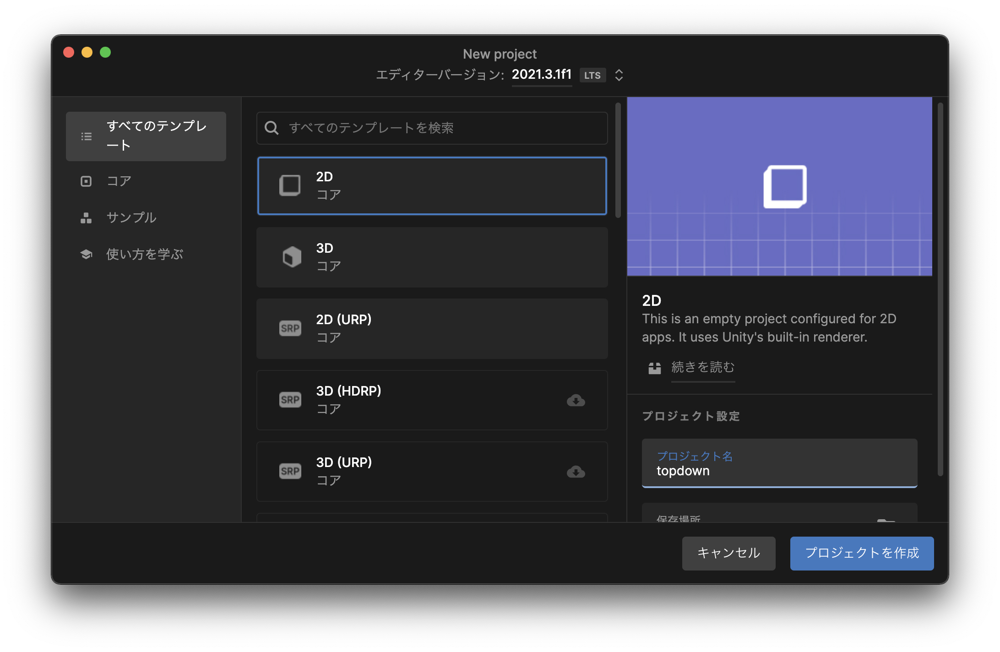
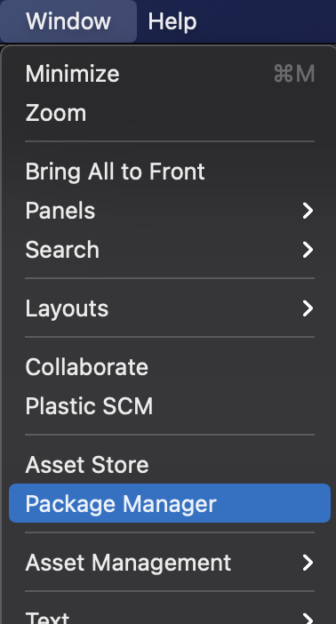
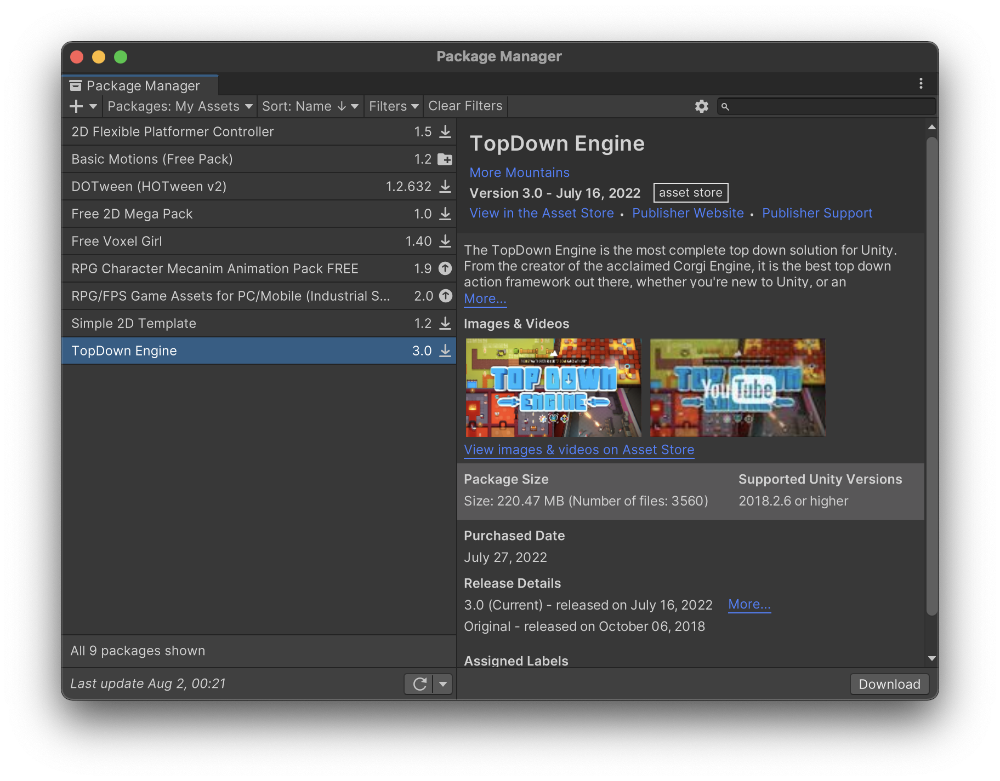
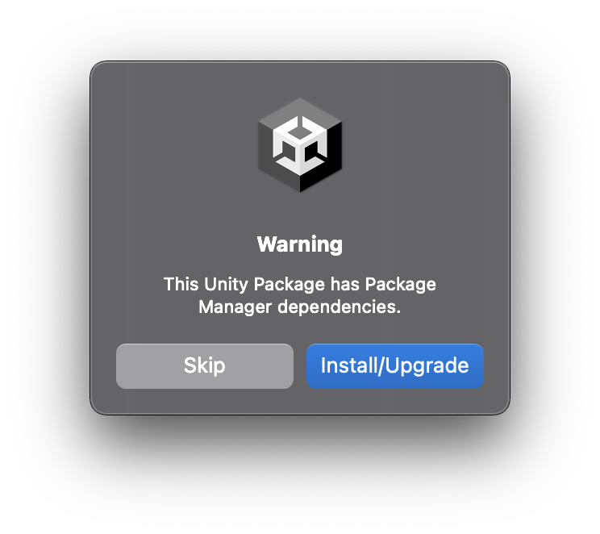
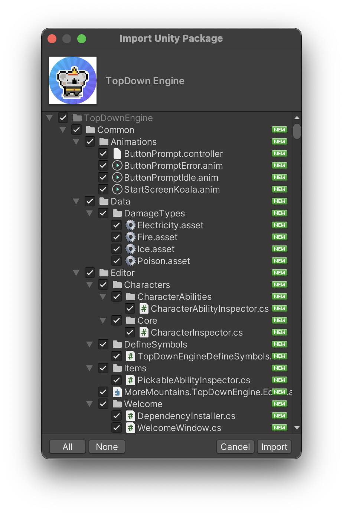
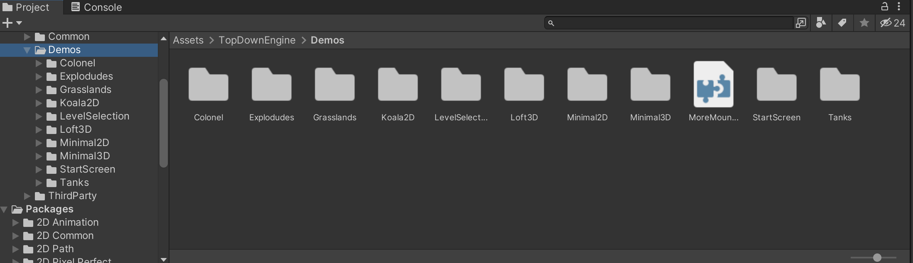
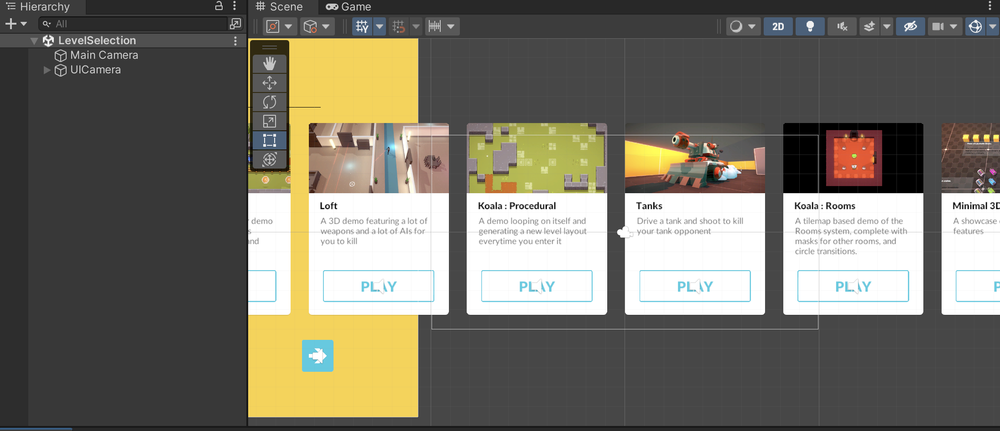
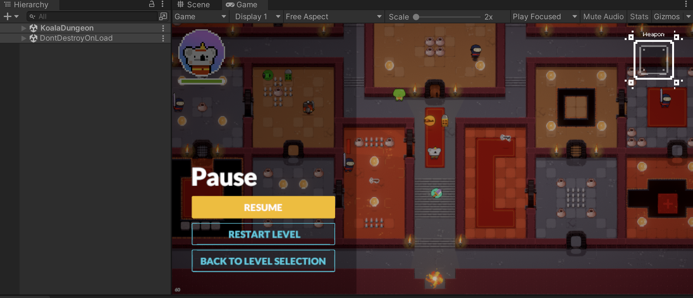
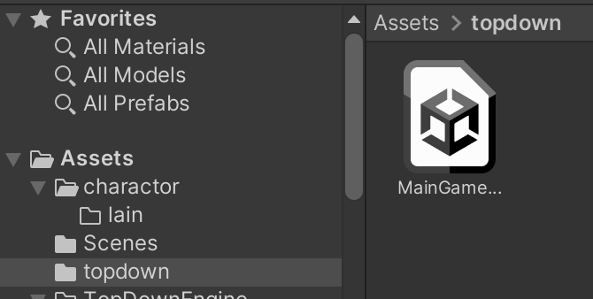
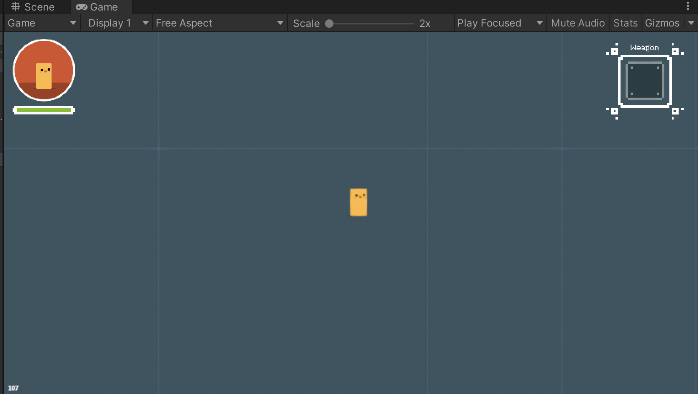

頑張らないために頑張る
ゆるく頑張ります
TopDown engineを使って見下ろし型のゲームを作る（１）〜インストールからテンプレートの実行まで〜
概要
TopDown engineとは、Unityで「見下ろし型（TopDown）」ゲームを作成するためのアセットです。3D、2D問わず利用可能ですが、見下ろし型というゲームの形式上2Dのほうが直感的にわかりやすいでしょう。
なお、同じデベロッパーが開発している有名なエンジンでCorgi Engineがあります。こっちはいわゆる2D横スクロールアクションゲームを作るためのエンジンです。
今回からは、このTopDown Engineを使ったゲーム開発を行います。とはいえ、この1記事では言及できないほどの機能や設定を備えているので数回に分けて書いていきます。数回で終わるんかな？_(┐「ε:)_
なにはともあれインストール
基本的には、普段のUnityにおける新規作成の手順に準拠しています。違いは、新規作成した直後のプレーンな状態のプロジェクトに、TopDown Engineをインポートすること。既存のプロジェクトにインポートする場合、競合を避けるため少なくとも（存在するなら）古いTopDown Engineのフォルダを最初に削除することをオススメします。
また、TopDown Engineが機能するためにいくつかのアセットと依存関係にあります。インポート時にエラーが発生することは考えられますが、これ自体は通常のことらしいです。エラーが出た場合は、こことかを参考にしつつインポートを進めることになると思います。
今回はインストール時を含め、発生したエラーは基本的に掲載する方向で記事を作成しています。ただし、当方の環境では発生しなかったと言って、別の環境で発生する可能性がないわけではないので、そのあたりはご了承ください。
新規プロジェクトを作成する
まずは、Unity Hubでいつもどおり新規プロジェクトを作成します。ここはいつもどおり。

ここでは2Dを選択しています。名称は適当に「TopDown」としました。
アセットのインポート
新規プロジェクトが立ち上がったらTopDown Engineを追加します。メニュー「Window」＞「Package Manager」を選択します。

Package Managerの画面は、起動した直後だとPackageの欄が「In Project」になっているはず。

Packageを「My Assets」に変更すると、購入済みのアセットが一覧になって表示されるはず。表示されない場合はUnityエディタのコンソールを確認します。

上記のようにエラーメッセージが出ていることがあります。今回は「1回サインアウトしてから再度サインインしてね」とメッセージが表示されているので、そのとおりに従います。

正常にサインインできていれば、上記のように購入済みのアセットが表示されるはず。TopDown Engineが表示されているはずなので、選択して右下のDownloadボタンを押してからImportボタンを押します。ダウンロード済みの場合は最初からImportボタンが押せます。

「本当にインポートしていいの？」と聞かれるので、Importボタンを押します。

上記のようなメッセージが表示された場合は、Install/Upgradeボタンを押します。

今度は、TopDown Engineのどのコンポーネントをインポートするか選択するウィンドウが表示されます。基本的には全部インポートするので、そのままImportボタンを押せばOKです。あとはインポートが終わるまでしばらく待ちます。そこそこ時間がかかる（5分くらい？）なので、軽く休憩でも取りましょう。

インポートが終わると、Assetsフォルダの中にTopDown Engineのフォルダが作成されています。このフォルダには各種デモが格納されています。その中の「LevelSelection」というフォルダ内にあるSceneを実行すると、各種デモを選択できる画面が表示されます。

上記スクショは、LevelSelectionのSceneファイルをダブルクリックして選択した様子。ここからゲームを実行してみます。

任意のゲームを選択すると、自動的にシーンが切り替わってゲームが開始されます。ゲーム実行中にEscキーを押すと左側にメニューが表示され、LevelSelection画面に戻れます。
- WASD、上下左右キー：上下左右に移動
- Space：ジャンプ、キャラクターとの会話
- I：装備選択画面
- マウスポインタ：照準の方向
- マウス左ボタン：弾の発射
- F：ダッシュ
- E：攻撃
デモゲーム本体でのキー操作は上記の通りです。ゲームによってキー設定が異なっています。
ただ、現状だと当方の環境では「KoalaProcedural」というデモゲームを実行しようとするとエラーが表示されます。
Tilemap Generator : you need to specify a Tile to paint with.
UnityEngine.Debug:LogError (object)
MoreMountains.Tools.MMTilemapGenerator:GenerateLayer (MoreMountains.Tools.MMTilemapGeneratorLayer) (at Assets/TopDownEngine/ThirdParty/MoreMountains/MMTools/Tools/MMProcedural/MMTilemapGenerator/MMTilemapGenerator.cs:108)
MoreMountains.Tools.MMTilemapGenerator:Generate () (at Assets/TopDownEngine/ThirdParty/MoreMountains/MMTools/Tools/MMProcedural/MMTilemapGenerator/MMTilemapGenerator.cs:82)
MoreMountains.TopDownEngine.TilemapLevelGenerator:Generate () (at Assets/TopDownEngine/Common/Scripts/Procedural/TilemapLevelGenerator.cs:64)
MoreMountains.TopDownEngine.TilemapLevelGenerator:Awake () (at Assets/TopDownEngine/Common/Scripts/Procedural/TilemapLevelGenerator.cs:55)「KoalaProcedural」以外のゲームはとりあえず動作するので、そっちで確認しています。なお、この記事を書いている現在でもまだエラーが解消していないです。どうしよ_(┐「ε:)_
最小構成のシーン
デモにも含まれていますが、2Dまたは3Dのゲーム向けに「最小構成のシーン」が用意されています。
「Minimal」と名前のつくシーンがそれで、「Minimal3D」なら3D向け、「Minimal2D」なら2D向けのシーンとなっています。「Minimal2D」フォルダに2Dシーンのサンプルが、「Minimal3D」フォルダに3Dシーンのサンプルが格納されています。基本的な内容は一緒だがカメラのみ異なっているので注意。
- GameManager：ゲームを実行する際に必要なオブジェクト。
- SoundManager：音声を再生するために必要なオブジェクト。こちらもゲームの体裁を取るなら基本的には必要。
- Other managers
- LevelManager：LevelManagerは、キャラクタのスポーンやそのステージ特有の処理を担当する。インスペクタで、このステージが使用するキャラクターと、初期スポーンポイントを指定する必要がある。
- InitialSpawnPoint：LevelManagerにキャラクターを出現させる場所を指定する。
- TimeManager：時間に関係する処理を担当。これは、時間を遅くするような高度なものから、一時停止のような簡単なものまで含まれている。
- AchievementRules：このステージでアンロックできるアチーブメントを記述する。アンロックするような対象がない場合は使用しない。
- Camera：通常、ゲームステージにはカメラが必要で、ミニマルシーンにはCinemachineバーチャルカメラやUIエレメントをサポートするUICameraなどの高度なカメラセットアップが用意されている。もちろん、これらをすべて取り除きシンプルなカメラを使用することも可能。ちなみに、UICameraにはInputManagerも含まれていることに注意。InputManagerが存在しない場合、キャラクターは動かないため、UICameraを削除する場合はシーンのどこかにInputManagerがあることを確認する必要がある。
- InputManager
- Level：TopDown Engineはいわゆるゲームステージのことをレベルと呼ぶ。「レベルアップ」とかで言うところのレベルとは意味合いが異なるので、TopDown Engine関連のドキュメントを参照する場合は注意が必要。最小構成のシーンでは基本的な地面と壁のみが存在している。
ここでは、Minimal2Dからもっともプレーンなシーン「MinimalScene2D」を選択します。このシーンを任意のフォルダへコピーします。

ここではAssetsフォルダ配下に「topdown」というフォルダを作成してコピーし、「MainGameScene」という名前にリネームしています。ここでリネームしたシーンをダブルクリックして開き、ゲームを開始します。

開始すると、こんな感じのゲームが始まるはずです。デモ画面で見たゲームを同じものなのでWASDで動かせますが、最小構成であるためアイテムなどが存在しません。
このシーンをベースにして、プレイヤーキャラクターを自作のものに変更したり、ゲームステージ（TDEではステージのことをレベルというのでTDE関連のドキュメントを読む際は注意）を作成したり、BGMやSEが再生されるよう編集したりなどを行っていくわけです。
まとめ
ここまででインストールから最小構成のシーンまでを準備しました。2Dに限りませんが、ゲームシステムを含めた環境構築は、ゲームの根っこ部分であり大事なわりに、どうしても派手さがないのでやっててツラくなりがちです。ならない？
こういうアセットで根っこ部分を代用して自分が欲しいシステムを構築するっていうのも、時間や労力の節約になるしその分フォーカスしたいところに注力できるので、個人的にはどんどん取り入れていきたいものです。
次はデモ用プレイヤーを自作のプレイヤーに置き換えるところから再開したいと思います。